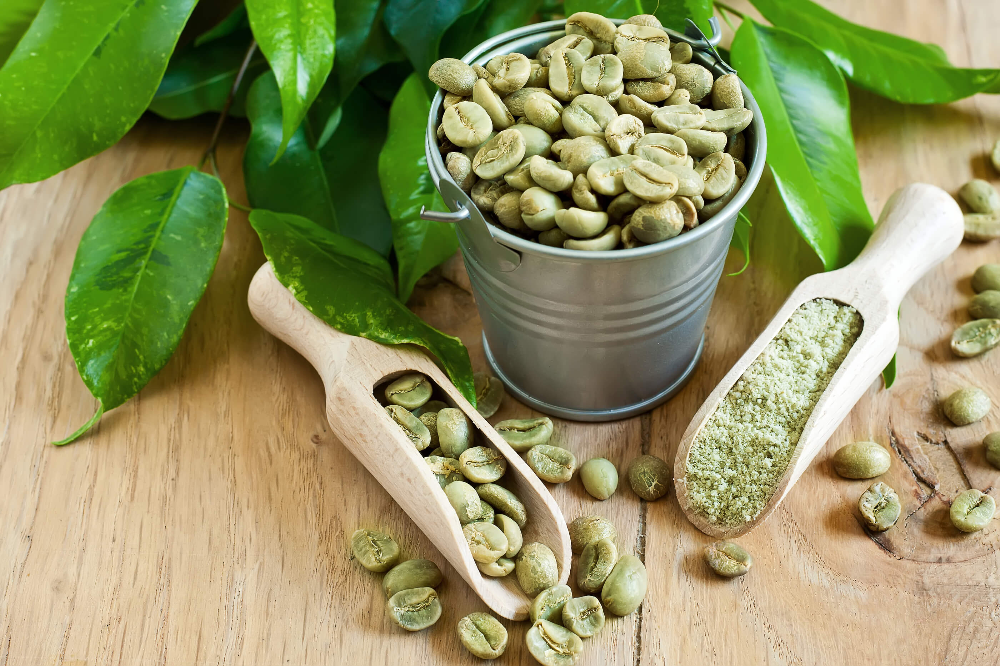
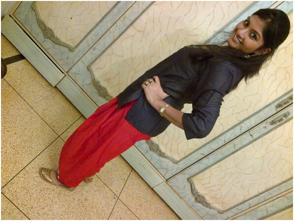
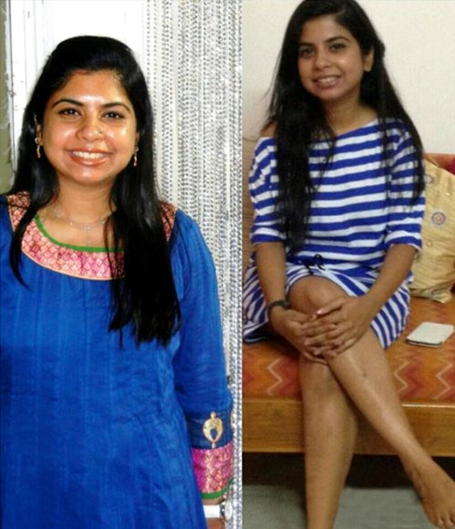

नमस्ते दोस्तों! सबनें देखा होगा कि मैनें बहुत ज्यादा वजन घटा लिया है और मुझसे अब बहुत सवाल पूंछे जाने लगे हैं. मैं आप सभी को जवाब देना तथा सहयोग करना चाह रही थी, पर असफल रही- इतनें सारे सवालों के जवाब देने के लिए मुझे हमेशा ऑनलाइन ही रहना पड़ता. इसलिए मैंने यह लेख लिखा ताकि लोगों को जवाब मिल जाए कि “मैनें ३१ किलो वजन कैसे घटाया?” (इसका मतलब यह नहीं कि आप मुझे कुछ लिख नहीं सकते या पूंछ नहीं सकते, इससे बस मेरी जिंदगी आसान हो गयी है).
मैं कभी भी दुबली नहीं थी पर मैनें एक बात पर ध्यान दिया कि मैं मोटी होती जा रही थी.मेरे पेट पर तीन घेरे पद गए थे और मैं बिकिनी में बुलडॉग की तरह दिखती थी, साथ ही मेरे कूल्हों, पैरों और नितम्बों का अकार बढ़ता ही जा रहा था! मैनें हर तरीके से स्वस्थ शरीर पाने का निश्चय किया, इसलिए मैनें तला चिकना खाना खाना बंद कर दिया तथा विलम्ब से आहार लेना भी बंद कर दिया. मैं प्रातः काल दौड़ने तथा शाम को व्यायामशाला में अभ्यास के लिए जाने लगी पर वजन बढ़ता ही जा रहा था. एक महीनें के बाद मेरा वजन भयावह स्थिति में पहुँच गया-लगभग ९० किलो! मैं अपने आहार को और अधिक नियंत्रित करती चली गयी तथा मैनें मांस, ब्रेड फ्राइज और मिठाइयों का त्याग कर दिया. अंत में मैं बस फल तथा सब्जियां खाने लगी एवं केवल पानी पीकर गुजारा करने लगी. मैनें कुछ बहुत ही महंगी वजन घटाने वाली गोलियां तथा चाय आदि लीं पर किसी से भी मुझे कोई फायदा नहीं हुआ. कुछ समय पश्चात, घटा हुआ वजन वापस आ जा रहा था.
आहार नियंत्रण, गोलियों तथा व्यायामशाला में व्यक्तिगत प्रशिक्षक को हजारों रूपए देने के बाद मेरे हाथ बस हताशा ही लगी. एक दिन मैनें ग्रीन कॉफी के बारे में एक लेख पड़ा तथा इसे अजमाने का निर्णय लिया. हालाँकि मैनें डेमी मूर, कैटी पेरी, जे-लो तथा अन्य कई अभिनेताओं एवं अभिनेत्रियों को इस कॉफी की सहायता से वजन घटाते सुना था पर मैं थोड़ी निराशावादी हो गयी थी. पर हर एक चीज़ को आजमा कर निराश होकर मेरे पास कोई और विकल्प भी नहीं बचा था! इसके अलावा मैनें प्रतिक्रियाएं भी पढ़ीं और वे काफी अच्छी थीं!
इसलिए मैं निश्चित थी! मैं उनकी वेबसाइट पर गयी, फिर से हर चीज़ जाँची तथा कॉफी आर्डर कर दी. यह कुछ एक हफ़्तों में आ गयी. मैनें निर्देश पढ़े तथा हर रोज नाश्ता तथा खाने के साथ २-३ कप पीने लगी.

केवल दो हफ़्तों के अन्दर, मेरे परिणाम शानदार थे- मैनें १३ किलो वजन घटाया! थुलथुलापन चला गया था तथा मेरी देहयष्टि काफी अच्छी हो गयी थी! कुल्हे और पेट काफी छोटा हो गया था- और मेरा मूड अच्छा हो गया! मुझे विश्वास होने लगा कि बिना किसी आहार नियंत्रण या कसरत के मैं फिर से सुन्दर बन सकती हूँ! इसलिए मैं अपनी इच्छानुसार सब करती रही! मैं कसरत और भूखे रहने से आजिज आ चुकी थी...
तीसरे हफ्ते के अंत तक, मेरा वजन ८ किलो और घट गया था! मैं और अधिक स्वस्थ हो गयी थी और इससे मुझे इतनी प्रेरणा मिली कि मैं एलीवेटर की जगह सीडियों का प्रयोग करने लगी. जो पहले एक कठिन काम हुआ करता था वह अब मेरे लिए काफी आसान हो गया था! मुझे विश्वास नहीं हो रहा था कि यह बस इसलिए हो रहा था क्यूंकि मैं कॉफी पैक पर दिए सामान्य निर्देशों का पालन कर रही थी! अगर मैं यह कर सकती थी- तो हर कोई कर सकता था! केवल दो महीनों में मेरा वजन ३१ किलो कम हो गया था!
मैनें अपना लक्ष्य बस ६० दिनों में पा लिया था. मेरा पेट कम हो गया था, मेरा वजन ३१ किलो कम हो चुका था और मुझे ऐसा शरीर मिला जिसकी मैनें सपने में भी कल्पना नहीं की थी!

अब मैं अपने दोस्तों तथा सहकर्मियों को ग्रीन कॉफी की सलाह देती रहती हूँ. आवश्यक: केवल अधिकृत वेबसाइट से ही खरीदें अन्यथा आपको एक नकली उत्पाद मिल सकता है. मैं अपने परिणामों से खुश हूँ और मुझे विश्वास है कि आप भी खुश होंगे! पूर्वाग्रह को भूल जाइये: आपको अच्छे शरीर के लिए कोई आहार नियंत्रण तथा कसरत की जरुरत नहीं है!
हर कोई जिसने ग्रीन कॉफी पीकर वजन घटाया है, कृपया अपनें परिणाम यहाँ साँझा कीजिये! आप और लोगों की मदद करने में सहायक होंगे! बधाई हो!
नमस्कार! मेरे पास एक शुभ समाचार है! ग्रGreen Coffee कैप्सूल ऑनलाइन भी ऑफिशियल स्टोर से आर्डर किए जा सकते हैं। इसे जरूर ट्राय करें!
प्रतिक्रियाएं
प्रिय रुचिता, उत्साह देने के लिए धन्यवाद. अंततः मैनें उस अतिरिक्त वजन से छुटकारा पा लिया है! तीन हफ्ते गुजर गए हैं और मैनें २८ किलो वजन कम कर लिया है. अब मेरा वजन ५७ किलो है, और आपके वादे के अनुसार यह अब स्थिर है. बहुत बहुत बधाई, सुमन.

मैं बहुत समय से पतले शरीर का सपना देख रही थी. इस पेज पर मैनें ३ महीने पहले सप्लीमेंट के बारे में पढ़ा. मैं ऑर्डर करने से झिझक रही थी पर मेरी माँ ने जबरदस्ती की. यह सपना पूरे होने के लिए अदा की गयी बहुत छोटी से कीमत है! अब हम साथ में वजन घटा रहे हैं. हालाँकि वह मुझसे ज्यादा सफल है =(
मुझे बहुत ख़ुशी है कि यह ब्लॉग मुझे मिला. मैं वाकई में सप्लीमेंट आजमाउंगी! धन्यवाद